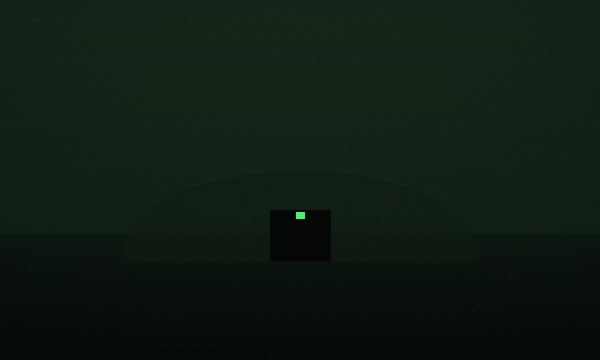
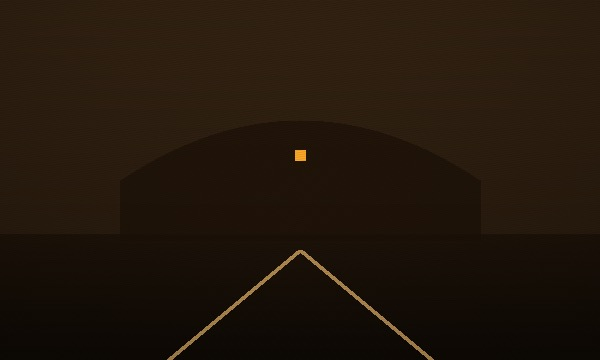
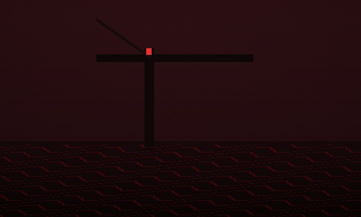
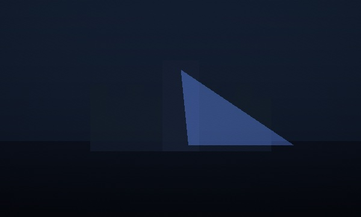

Refugio Subterráneo Norte
Peligro BajoBúnker militar automatizado con provisiones y filtro de aire funcional.
Cada región se clasifica según la actividad de infectados reportada en las últimas 24 horas. Revisa el nivel antes de planear cualquier desplazamiento.
Actividad constante de hordas. Evitar desplazamiento nocturno.
Avistamientos esporádicos. Moverse en grupo y con luz.
Sin actividad reciente confirmada. Punto de paso recomendado.
Zona de alta concentración. Acceso restringido.
Consulta los refugios activos en la zona infectada y evalúa su nivel de riesgo antes de trasladarte.

Búnker militar automatizado con provisiones y filtro de aire funcional.

Zona resguardada por civiles armados. Recursos limitados.

Alta actividad de caminantes en el perímetro exterior.

Murallas altas de concreto, torretas activas y agua corriente.
Sigue estas reglas para que sobrevivas en la zona infectada
Importante para la hidratación, lleva un litro.
Alimentos no perecederos, verifica el estado de la lata.
Contiene vendajes y antisépticos.
Herramienta de defensa propia para sobrevivir.